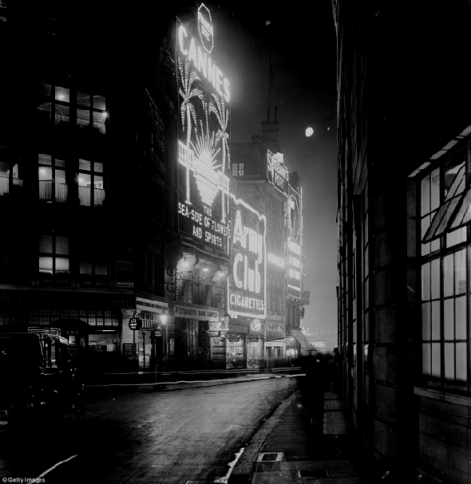

Today he’s all but forgotten, but back in the 1920s and 30s Roanoke Adams was the amateur detective, solving some of the most audacious and fiendish crimes ever committed. From locked room murders to bilocation to ancient curses, journey back to the golden age of sleuthing with these classic mysteries.